地政学
バクーはカスピ海、南コーカサス、トルコ、ロシア、イラン、中央アジアを結ぶ首都です。石油とガス、港湾、パイプライン、カラバフ後の外交が官庁街と湾岸に集まり、地域秩序の変化を映す都市です。海も境界です。
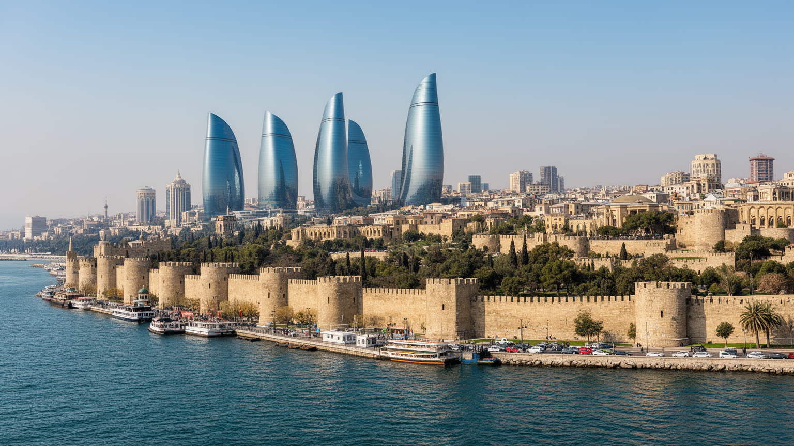
🇦🇿 アゼルバイジャン / カスピ海西岸 / World City Atlas
カスピ海の風を受ける半島の首都です。旧市街の城壁、石油ブームの邸宅、フレイムタワー、港湾、ガス外交、ムガーム音楽、世俗国家の儀礼、住宅格差が湾岸の都市景観に重なります。
都市の骨格
バクーはアブシェロン半島の南岸に広がり、海、油田、港、官庁、旧市街、高層住宅が近い距離で重なります。国家の富と権力、地域回廊、観光の華やかさ、風の強い日常が同じ湾岸に集まる都市です。
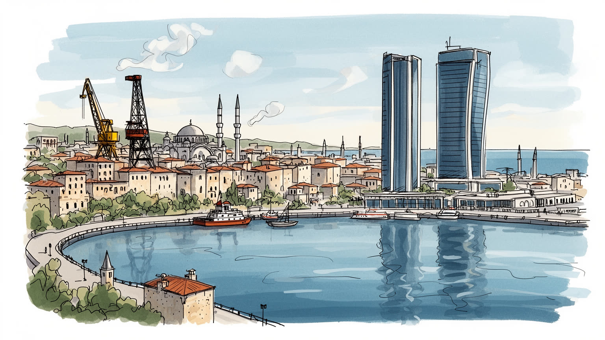
バクーはカスピ海、南コーカサス、トルコ、ロシア、イラン、中央アジアを結ぶ首都です。石油とガス、港湾、パイプライン、カラバフ後の外交が官庁街と湾岸に集まり、地域秩序の変化を映す都市です。海も境界です。
雇用は石油ガス、港湾、建設、金融、行政、観光、警備、小売、飲食に広がります。高層開発と油田収入が街を変える一方、郊外の通勤、非正規労働、物価上昇が家計を圧迫します。技能の差も収入をはっきり分けます。
シーア派の記憶、世俗国家の制度、ムガーム音楽、絨毯、ロシア語文化、映画、劇場、ノヴルーズが混ざります。祈りと国家儀礼、家族の宴、音楽の稽古が、湾岸の夜景とは別の厚みを作ります。記憶も日常に残ります。
旅行者はイチェリシェヘル、乙女の塔、海浜大通り、火の塔、泥火山を巡ります。住民は風、渋滞、住宅費、職探し、監視への緊張、郊外化と向き合いながら、海辺の首都を日常として使います。暮らしの差も見えます。
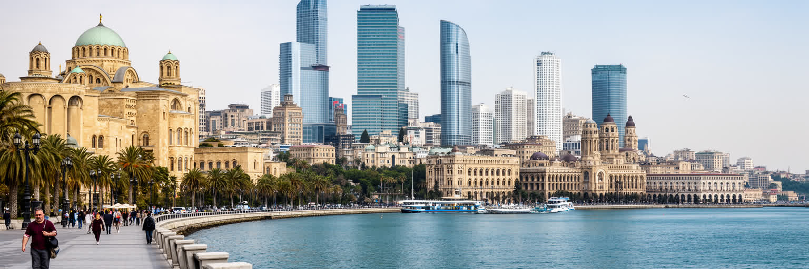
バクーの第一印象は、カスピ海に沿う長い湾岸で決まります。海浜大通りには散歩道、公園、博物館、商業施設、ホテル、政府行事のための広い空間が並び、旧市街の石壁と現代的な高層建築が同じ視界に入ります。水辺は観光客にとって写真を撮る場所ですが、住民にとっては週末の散歩、家族の外出、夜の涼み、政治的に管理された公共空間でもあります。カスピ海は外洋ではなく内海で、油田、港湾、漁業、環境汚染、水位変動、地域外交が絡みます。海面の変化や埋め立ては、景観だけでなくインフラや不動産開発にも影響します。湾岸をきれいに整えることは国家の近代性を示す演出になる一方、海辺の公共性を誰が使えるか、誰が清掃や警備や建設を担うかも問われます。中心部の明るい歩道から少し離れれば、道路の渋滞、郊外の住宅地、油田跡の土地利用が見えてきます。バクーの水辺は、都市の美しい顔であると同時に、国家収入、環境負荷、観光政策、住民の余暇を結ぶ実務的な前線です。海風が強い日は、広場の開放感も移動の負担へ変わります。夜の照明やイベントは湾岸を華やかにするが、公共空間が消費の場に偏りすぎれば、座るだけの人や静かに歩きたい人の居場所は狭くなります。海を眺める権利が所得や消費額に左右されないかも重要です。その揺れまで含めて、カスピ海岸はこの首都の公共生活を形づくっています。
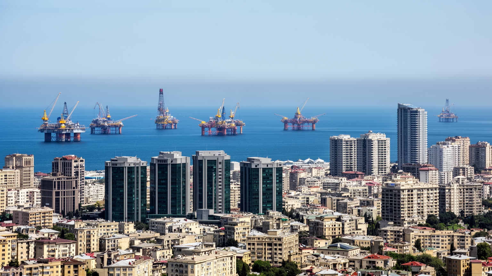
バクーは十九世紀末から世界的な石油都市として成長しました。ノーベル兄弟やロスチャイルド系資本が関わった油田ブーム、ソ連期のエネルギー産業、独立後のカスピ海開発、バクー・トビリシ・ジェイハン石油パイプライン、南部ガス回廊は、都市の富と外交を作ってきました。今日の金融、建設、ホテル、道路、文化施設、国際イベントの多くは、直接または間接にエネルギー収入の影響を受けます。油田は国家財政を支える一方、価格変動、資源依存、汚職、環境負荷、地域格差を生みます。高収入の専門職、国営企業、外資系サービス、港湾物流の仕事がある一方、清掃、警備、配送、建設現場、飲食店で働く人の賃金は同じ都市の華やかさに届きにくいです。石油都市を読む時、採掘量や輸出額だけを見ても不十分です。油の富がどの地区の道路を整え、どの住宅を高くし、どの公共サービスを支え、どの環境問題を先送りするのかを見る必要があります。バクーの近代性はエネルギーによって加速したが、その力は都市を一方向に豊かにするだけではありません。脱炭素の圧力が強まるほど、技術、教育、観光、物流への転換が現実の課題になります。大学や訓練機関が若い労働者を新しい産業へつなげられるか、国営部門に偏った雇用を民間の技能形成へ広げられるかも重要です。油田の記憶と将来の雇用をどう結ぶかが、この首都の持続性を左右します。
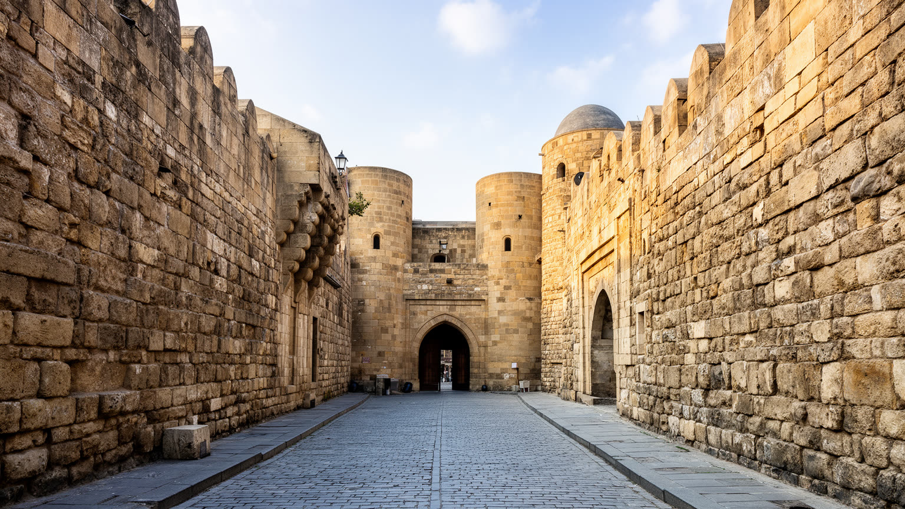
イチェリシェヘルと呼ばれるバクー旧市街は、城壁、乙女の塔、シルヴァンシャー宮殿、隊商宿、モスク、狭い路地を抱える歴史地区です。ペルシア、シルクロード、カスピ海交易、イスラム王朝、ロシア帝国、ソ連、独立後の観光政策が、石の街区に重なっています。旧市街は世界遺産として保護され、観光の中心になったが、遺産は美しい背景だけではありません。そこには住民、修復職人、小さな店、ガイド、警備員、礼拝の場、学校の記憶があります。観光収入は建物の修復や雇用を支える一方、短期滞在者向けの商業化、家賃上昇、生活音への苦情、住民の減少を招きます。古い路地は歩くには魅力的ですが、救急、消防、排水、バリアフリー、耐震補強には難しさがあります。歴史地区を読むには、塔や宮殿だけでなく、誰が維持費を負担し、誰が遺産の物語を語り、誰がそこに住み続けられるのかを考えなければなりません。バクーの旧市街は、湾岸の近未来的な塔と対照的に見えますが、実際には同じ都市ブランドの一部として利用されています。修復された石壁の美しさと、観光客向けの店舗に置き換わる生活の弱さは、同じ保存政策の表裏です。大切なのは、古さを飾りに変えすぎず、信仰、商い、住まいの時間を残すことです。石壁の陰には、都市が何度も外部の力を受け入れ、作り直してきた長い記憶があります。
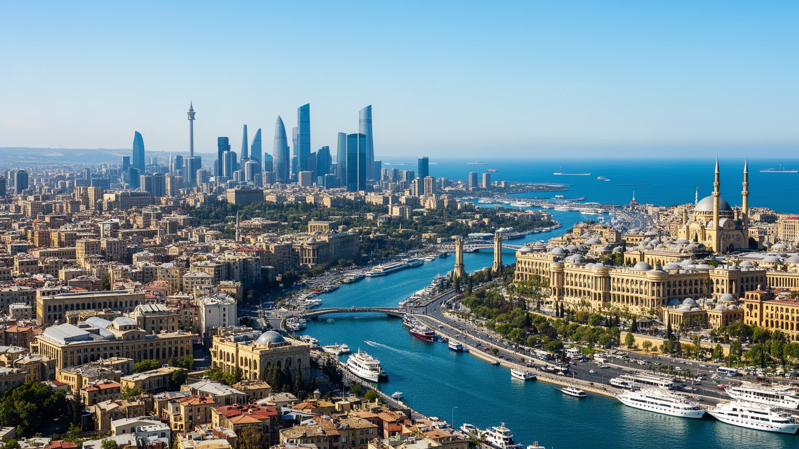
バクーはアゼルバイジャンの政治中枢であり、南コーカサスの力学を読み取る場所でもあります。大統領府、政府機関、国営企業、大使館、メディア、大学、警備された大通りは、国家の意思決定が首都に集中していることを示します。カラバフ紛争後の領土管理、アルメニアとの和平交渉、トルコとの同盟、ロシアとイランへの距離、欧州へのガス供給、中国や中央アジアへ向かう物流回廊は、バクーの政策課題として湾岸の会議室に集まります。地政学は抽象的な地図だけでなく、市民の兵役経験、避難民の住宅、記念碑、学校教育、ニュース、空港の行き先にも現れます。国家が強い都市では、祝祭や国際イベントが整然と演出される一方、言論の自由、市民団体、野党活動、監視への不安も都市の空気を作ります。旅行者が見る清潔な中心部の背後には、政治的な緊張と社会的な沈黙があります。バクーを理解するには、豊かな資源国の首都としての自信と、小国が大国の間で選択を迫られる緊張を同時に見る必要があります。港湾、パイプライン、鉄道、外交施設は、経済インフラであると同時に安全保障の装置です。国際会議やスポーツ大会の開催も、国家の見せ方と外交の一部として機能します。首都の権力は海に向かって開かれているように見えながら、国内の声をどう扱うかという内側の課題も抱えています。そこも読む必要があります。
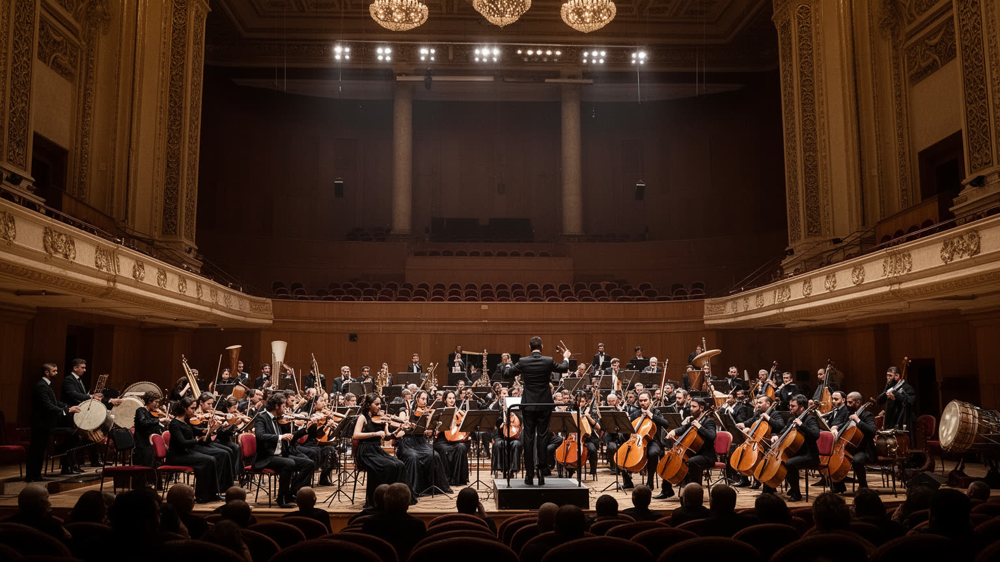
バクーの文化は、油田都市の近代性とアゼルバイジャンの民俗的な深さを併せ持ちます。ムガーム音楽、タールやケマンチェの音色、詩、舞踊、絨毯、劇場、映画、オペラ、ジャズ、ノヴルーズの祝祭は、国家文化として保護されるだけでなく、家庭の宴や音楽学校の稽古にも続きます。ロシア帝国期とソ連期には、都市の劇場、音楽院、映画スタジオ、出版文化が発展し、トルコ語系、ペルシア語系、ロシア語系、ユダヤ人、アルメニア人の記憶も混ざりました。今日の中心部では、絨毯博物館やコンサートホール、デザインされた公共建築が、文化を国家の洗練として見せます。一方で、文化の厚みは高価な施設だけでは測れないです。結婚式の音楽、家族の料理、路地の会話、郊外の学校、古い映画館の記憶、移住で失われた共同体の痕跡も都市の文化です。国際イベントや観光PRはバクーを華やかに見せるが、表現の自由や少数派の記憶がどこまで語れるかは別の問題です。文化都市として読むなら、国家が選ぶ美しい物語と、住民が日々使う多声的な記憶を分けて見る必要があります。音楽や絨毯の技術が次世代へ渡るには、家庭の継承だけでなく、教育、発表の場、職人の収入が必要になります。ムガームの即興性は、厳しい形式の中で声を揺らす芸術であり、バクーそのものの性格にも似ています。整えられた都市景観の下で、複数の歴史が響き続けています。
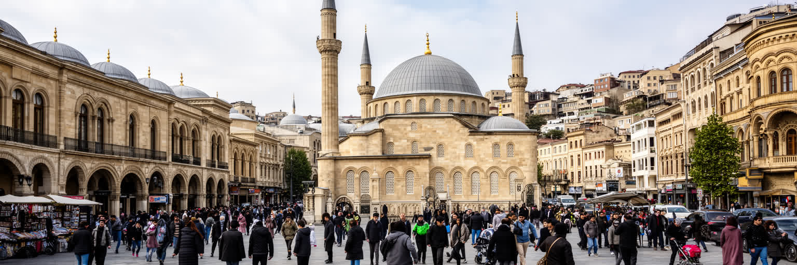
アゼルバイジャンはイスラム文化圏に属し、バクーにもモスク、墓地、聖者への信仰、ラマダンや犠牲祭、家族の葬送儀礼があります。多数派はシーア派の伝統を持つが、国家は強い世俗主義を掲げ、宗教活動は公的管理の下に置かれます。中心部ではモスクの祈り、ワインやカフェ文化、近代的な服装、国家式典、商業施設が近い距離で共存します。この共存は寛容として語られることもありますが、信仰の自由、国家管理、外部宗教運動への警戒、若者の世俗的な生活感覚、地域出身者の保守性が複雑に絡みます。バクーにはユダヤ人共同体やロシア正教会の記憶もあり、多民族都市としての過去を完全には失っていないです。ただし、カラバフ紛争やソ連崩壊後の移動は、共同体の構成を大きく変えました。宗教を観光名所のモスクだけで読むと、家族の追悼、結婚式、断食、慈善、日々の倫理が見えなくなります。逆に、世俗的な高層都市としてだけ見ると、信仰が生活の節目を支える力を見落とします。バクーの宗教生活は、国家が掲げる近代性と、家庭や地域に残る儀礼の間で形づくられます。移住してきた地方出身者の習慣や、海外で学んだ若者の感覚も、信仰の見え方を少しずつ変えます。公共空間で宗教がどのように見え、どこで見えにくくされるかは、都市の自由度を測る手がかりでもあります。祈りは静かですが、社会の深い層に届いています。
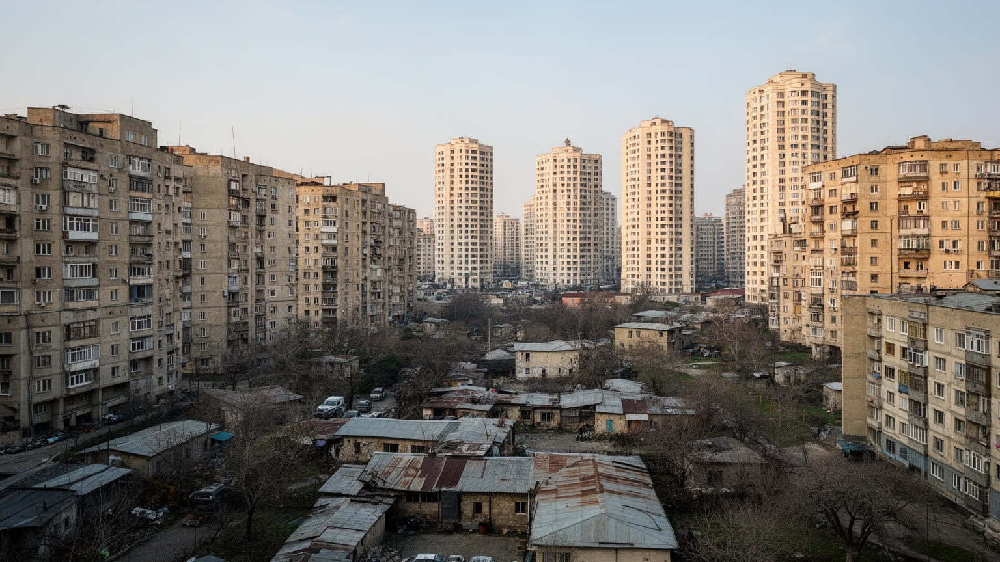
バクーの住宅景観は、石油収入による高層開発と、ソ連期から続く集合住宅、旧市街の住居、郊外の低層地区が混ざっています。湾岸や中心部には豪華なマンション、ホテル、オフィス、ショッピング施設が増え、都市の近代化を強く印象づけます。一方で、古い集合住宅ではエレベーター、断熱、配管、共有部分の管理、駐車場、子どもの遊び場が課題になります。郊外へ広がる住宅地では、通勤時間、バスや地下鉄への接続、学校、医療、緑地、歩道の質が暮らしを左右します。石油経済が作った富は都市全体に波及するが、中心部に住める人と周辺から通う人の差も広げます。若い家族にとって住宅価格と家賃は独立や結婚の条件であり、地方から来た人や低賃金の労働者にとっては大きな負担になります。再開発は老朽住宅を更新し、道路や公共空間を整える可能性を持つが、住民の移転、補償、近所のつながりの喪失も伴います。バクーを夜景の都市として見るだけでは、清掃員、警備員、建設労働者、店員がどこから通い、どの住宅で休むのかが見えません。都市の格差は所得表だけでなく、海に近い歩道を誰が散歩し、誰が長い通勤を強いられるかに表れます。水道や暖房、管理組合の力、住宅ローンへのアクセスも生活の差を広げます。住宅政策は、首都の安定と社会的な信頼を支える重要な都市政策です。家族の将来にも直結します。
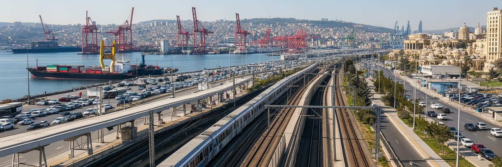
バクーはカスピ海西岸の港湾都市であり、地下鉄、幹線道路、鉄道、空港、新しい港湾施設を通じて国内外を結びます。アラート港方面の物流、バクー・トビリシ・カルス鉄道、カスピ海横断輸送、石油とガスのパイプラインは、アゼルバイジャンを中央アジア、トルコ、欧州へつなぐ回廊として位置づけます。こうした大きな物流の話は国家戦略として語られるが、市民にとって交通は通勤、渋滞、バス待ち、地下鉄の混雑、歩道の安全、タクシー料金として経験されます。中心部の広い道路は国際イベントや車の流れを処理しやすい一方、歩行者にとって渡りにくい場所もあります。地下鉄は都市の骨格ですが、新しい住宅地の広がりに対して駅やバス接続が十分でない地区もあります。港湾と物流が拡大すれば雇用と投資は生まれるが、トラック交通、騒音、大気汚染、土地利用の衝突も増えます。交通を読むには、コンテナとパイプラインだけでなく、車を持たない人、子ども、高齢者、障害のある人、郊外の労働者が移動しやすいかを見る必要があります。バクーが回廊都市として成長するなら、国際物流の速度と日常移動の安全を同時に整えることが求められます。運転者中心の道路設計から、歩行者と公共交通を中心にした設計へどこまで移れるかも問われます。港から地下鉄駅、空港から旧市街までの接続は、都市の経済力と生活の質を一つに結ぶ指標です。
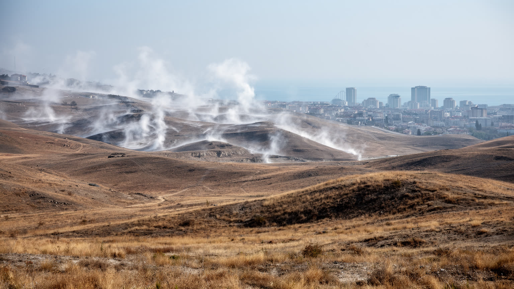
バクーは「風の街」として知られ、カスピ海からの強い風が都市の感覚を決めます。夏は乾いて暑く、冬は冷え込み、雨は多くないです。海辺の風は暑さを和らげることもありますが、歩行、建設、港湾作業、屋外イベント、冬の体感温度には負担にもなります。半乾燥の都市では、水、緑地、日陰、断熱、冷房、粉じん、排気、海辺の湿度が暮らしの条件になります。中心部の新しい舗装や広場は見栄えがよい一方、日陰が少ない場所では夏の歩行が厳しくなります。郊外や油田跡地では、土壌汚染、風で舞う砂、古い産業施設の環境負荷が課題として残ります。気候変動はカスピ海の水位、熱波、都市の冷房需要、エネルギー消費、低所得世帯の住環境に影響します。風を観光的なニックネームとして楽しむだけでは、屋外で働く人や古い住宅に住む人の負担を見落とします。街路樹、風を遮る建物配置、涼しい公共交通の待合、海辺の緑地、古い住宅の断熱改修は、派手ではありませんが重要な都市政策です。バクーの気候は、湾岸の開放感と同時に、乾きや寒暖差に適応する技術を求めます。水辺の再開発でも、見晴らしだけでなく風を受ける体の感覚を設計に入れる必要があります。風は都市の個性であり、同時に公共空間の設計を試す自然条件です。快適な首都を作るには、風景の美しさだけでなく、体で感じる暑さと寒さを扱う必要があります。生活の条件です。
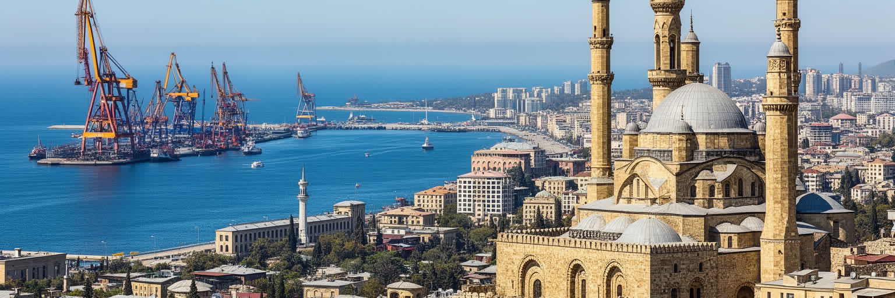
バクーを読むには、石油の富と都市の日常を切り離さないことが重要です。カスピ海、アブシェロン半島、旧市街、フレイムタワー、港湾、地下鉄、油田、官庁、絨毯、ムガーム、モスク、団地、郊外の通勤路は、同じ首都の別々の層です。外からは、近未来的な夜景と世界遺産が並ぶ華やかな都市として見えやすいです。しかし住民にとってのバクーは、家賃、仕事、家族の儀礼、学校、交通、物価、政治的な発言のしにくさ、風の強い冬、夏の暑さを調整する生活の場所です。資源国の首都は、国家の成功を見せる舞台になりやすいが、その舞台を支える労働と地域格差も同時に存在します。バクーの重要性は、経済規模だけではありません。南コーカサスの安全保障、欧州へのエネルギー供給、中央アジアとの回廊、トルコ世界との結びつき、イランやロシアへの距離が、都市の政策と空間に表れる点にあります。旧市街の石壁と湾岸の高層建築は、過去と未来の対比ではなく、資源、権力、文化、観光が互いに利用し合う関係を示しています。バクーの魅力を理解するには、海辺を歩く楽しさと、油田の環境負荷、文化の豊かさと表現の制約、首都の自信と住宅格差を同じ地図に置く必要があります。さらに、国際的に見せる都市像と、住民が感じる生活の重さの差にも注意したいです。そこに、カスピ海の風に鍛えられた都市の現実が見えてきます。